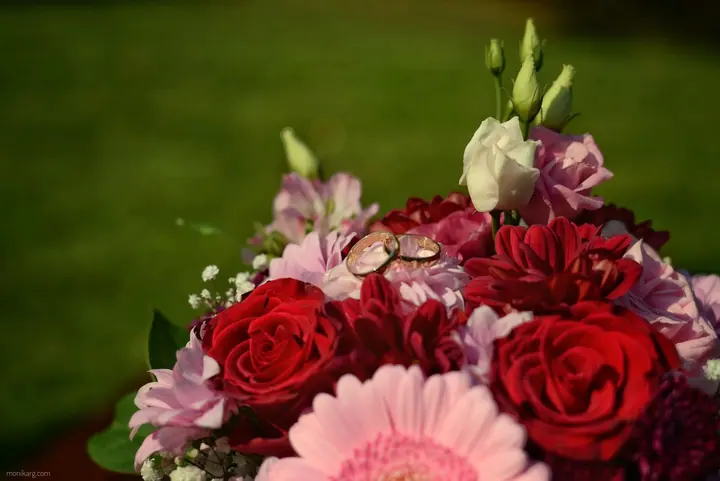
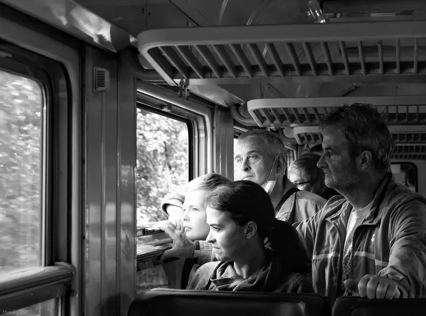

01 / 04
Svatby
Svatby fotím nejraději a nejvíc mě baví reportážní styl a momentky. Fotím v Moravskoslezském kraji, v Olomouci a v Brně, v Praze fotím obřady.
Zeptat se na termín→





Svatby a portréty plné skutečných momentů
Zeptat se na termín →(01) Ahoj
Jmenuji se Monika Grňová a fotografování se věnuji osm let. Nejraději fotím svatby a reportáže, kde se pořád něco děje , ale stejně ráda se potkám s rodinami a dětmi .
(02) Co fotím
01 / 04
Svatby fotím nejraději a nejvíc mě baví reportážní styl a momentky. Fotím v Moravskoslezském kraji, v Olomouci a v Brně, v Praze fotím obřady.
Zeptat se na termín→02 / 04
Fotím portréty žen i dětí. Ráda hledám zajímavá zákoutí, hru světla a stínů a lidi spojuji s architekturou.
Zeptat se na termín→03 / 04
Fotím rodiny s dětmi, děti samotné i zamilované dvojice. Focení je uvolněné a nikam nespěchá.
Zeptat se na termín→Dále nabízím
Reportáže miluju, protože se při nich pořád něco děje. Fotím oslavy, firemní i společenské akce a v minulosti jsem fotila i koncerty.
↗(03) Portfolio
Kliknutím fotku zvětšíte · fotografie jsou ilustrační
(04) Postup
Od první zprávy po hotovou galerii.
Krok 1 z 4
Ozvěte se přes formulář, e-mailem nebo telefonem. Napište, co chcete fotit, kdy a kde.
Krok 2 z 4
Probereme, jak si focení představujete, kde bude a co je pro vás důležité. Ráda poradím s místem i časem.
Krok 3 z 4
Fotím hlavně reportážně a nenásilně, takže nemusíte celou dobu pózovat. Nejvíc mě baví přirozené momentky.
Krok 4 z 4
Snímky vyberu a upravím, barevně i černobíle podle atmosféry. Hotové fotky vám pak předám.
Fotografie je pro mě vzpomínka, kterou chci uchovat.

(05) Za objektivem
K focení jsem se dostala náhodou jako malá holka. Fascinovalo mě, jak se jedním cvaknutím dá vytvořit skoro umělecké dílo. Začátky byly těžké. Učila jsem se techniku, kompozici i expozici a hledala ta pravá pravidla, až jsem pochopila, že dokonalá fotografie neexistuje.
Hodně mi pomohli přátelé, kteří mi upřímně a konstruktivně kritizovali fotky. Vyzkoušela jsem skoro všechny žánry, než jsem se našla. Nejvíc mě chytila reportážní fotografie. Fotila jsem koncerty, potom modelky a rodiny a později svatby.
Dnes mě baví street fotografie, a proto mám čím dál radši černobílou. Ráda spojuji lidi s architekturou a hledám zákoutí, kde si hraje světlo se stínem. Poslední roky je mou vášní fotografování na film. Fotku nevidím na displeji, slyším jen navíjení filmu a cvaknutí spouště, a to je pro mě zážitek.
Monika
Monika Grňová · Svatební a reportážní fotografka
Fotím v Ostravě a celém Moravskoslezském kraji i v okolních městech. Nově také v Olomouci, v Brně a na Brně-venkově. V Praze fotím svatební obřady.
Podle ceníku na portálu začínají svatby od 1 250 Kč, portréty a rodinné focení od 500 Kč a focení akcí od 800 Kč. Přesnou cenu vám pošlu podle rozsahu.
Nemusíte. Mám nejradši reportáž a momentky, takže vás spíš nechám být sami sebou a fotím to, co se právě děje.
Černobílou fotografii mám moc ráda, a když se k situaci hodí, ráda ji použiji. Klidně mi předem napište, co se vám líbí víc.
(07) Kontakt
Napište pár vět o tom, co si představujete, a termín, který se vám hodí.